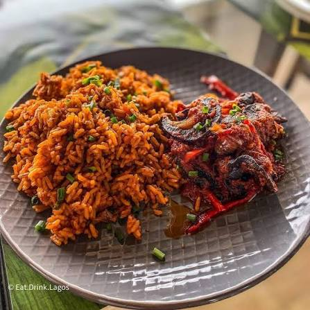
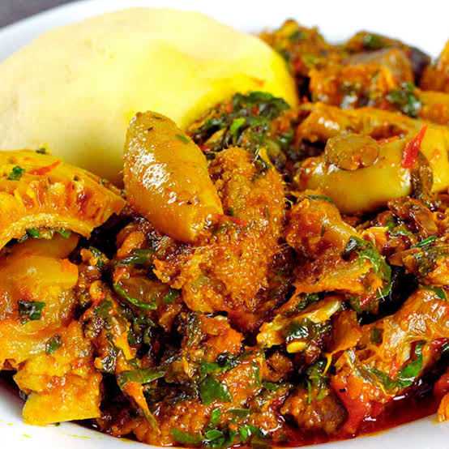

Jollof Rice & Meat
Smoky, spicy jollof served with tasty meat.
₦1,100
FRESH • FLAVOURFUL • NIGERIAN
From rich jollof rice to your favourite soups, explore our delicious menu and place an order in a few taps.
Explore the menu ↓OUR SPECIALTIES
Choose your favourites and add them to your order.

Smoky, spicy jollof served with tasty meat.

Rice served with a hearty selection of assorted meat.
Rich egusi soup paired with soft swallow.

Seasoned rice with colourful vegetables.

Soft beans cooked in pepper sauce with plantain.

Spaghetti in rich tomato-pepper sauce.

Classic Nigerian rice and beans.

Leafy vegetable soup with soft swallow.
YOUR ORDER
mode: restaurant WhatsApp number must be configured before checkout works.
Ify's restaurant • Monday–Friday, 9 AM–2 PM
Restaurant details and menu prices are illustrative.